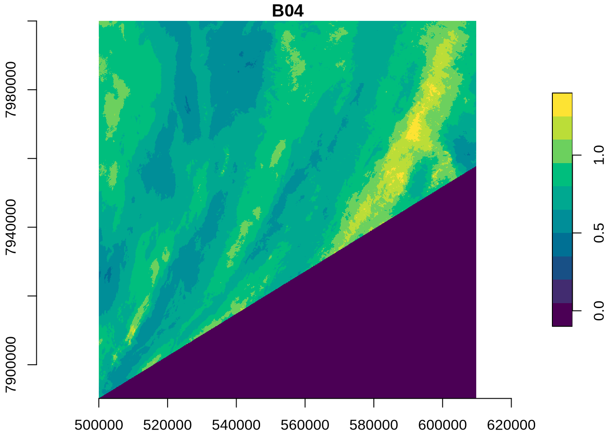

# install.packages("rstac")
# install.packages("tidyverse")
# install.packages("stars")
# install.packages("terra")Access and analyse EOPF STAC Zarr data with R
Introduction
In this tutorial, we will demonstrate how to access EOPF Zarr products directly from the EOPF Sentinel Zarr Sample Service STAC Catalog using R. We will introduce R packages that enable us to effectively get an overview of and read Zarr arrays.
What we will learn
- ☁️ How to overview cloud-optimised datasets from the EOPF Zarr STAC Catalog with the
Rarrpackage. - 🔎 Read and examine loaded datasets
- 📊 Perform simple data analyses with the loaded data
Prerequisites
An R environment is required to follow this tutorial, with R version >= 4.5.0. For local development, we recommend using either RStudio or Positron and making use of RStudio projects for a self-contained coding environment.
We will use the following packages in this tutorial:
rstac(for accessing the STAC catalog)tidyverse(for data manipulation)terra(for working with spatial data in raster format)stars(for reading, manipulating, and plotting spatiotemporal data)
You can install them directly from CRAN:
We will also use the Rarr package (version >= 1.10.0) to read Zarr data. It must be installed from Bioconductor, so first install the BiocManager package:
# install.packages("BiocManager")Then, use this package to install Rarr:
# BiocManager::install("Rarr")Finally, load the packages into your environment:
library(rstac)
library(tidyverse)
library(Rarr)
library(stars)
library(terra)Access Zarr data from the STAC Catalog
The first step of accessing Zarr data is to understand the assets within the EOPF Sample Service STAC catalog. The first tutorial goes into detail on this, so we recommend reviewing it if you have not already.
For the first part of this tutorial, we will be using data from the Sentinel-2 Level-2A Collection. We fetch the “product” asset under a given item, and can look at its URL:
first_item <- stac("https://stac.core.eopf.eodc.eu/") |>
collections(collection_id = "sentinel-2-l2a") |>
items(limit = 1) |>
get_request()
first_item_id <- first_item[["features"]][[1]][["id"]]
s2_l2a_item <- stac("https://stac.core.eopf.eodc.eu/") |>
collections(collection_id = "sentinel-2-l2a") |>
items(feature_id = first_item_id) |>
get_request()
s2_l2a_product <- s2_l2a_item |>
assets_select(asset_names = "product")
s2_l2a_product_url <- s2_l2a_product |>
assets_url()
s2_l2a_product_url[1] "https://objects.eodc.eu:443/e05ab01a9d56408d82ac32d69a5aae2a:202602-s02msil2a-eu/10/products/cpm_v262/S2A_MSIL2A_20260210T090921_N0512_R007_T35TPE_20260210T120313.zarr"The product is the “top level” Zarr asset, which contains the full Zarr product hierarchy. We can use zarr_overview() to get an overview of it, setting as_data_frame to TRUE so that we can see the entries in a data frame instead of printed directly to the console. Each entry is a Zarr array; we remove product_url from the path to get a better idea of what each array is. Since this is something we will want to do multiple times throughout the tutorial, we create a helper function for this.
derive_store_array <- function(store, product_url) {
store |>
mutate(array = str_remove(path, product_url)) |>
relocate(array, .before = path)
}
zarr_store <- s2_l2a_product_url |>
zarr_overview(as_data_frame = TRUE) |>
derive_store_array(s2_l2a_product_url)
zarr_store# A tibble: 124 × 8
array path data_type endianness compressor dim chunk_dim nchunks
<chr> <chr> <chr> <chr> <chr> <lis> <list> <list>
1 /conditions/ge… http… unicode2… little blosc <int> <int [1]> <dbl>
2 /conditions/ge… http… unicode96 little blosc <int> <int [1]> <dbl>
3 /conditions/ge… http… unicode96 little blosc <int> <int [1]> <dbl>
4 /conditions/ge… http… float64 little blosc <int> <int [1]> <dbl>
5 /conditions/ge… http… float64 little blosc <int> <int [2]> <dbl>
6 /conditions/ge… http… float64 little blosc <int> <int [3]> <dbl>
7 /conditions/ge… http… float64 little blosc <int> <int [5]> <dbl>
8 /conditions/ge… http… float32 little blosc <int> <int [1]> <dbl>
9 /conditions/ge… http… float32 little blosc <int> <int [1]> <dbl>
10 /conditions/ma… http… uint8 <NA> blosc <int> <int [2]> <dbl>
# ℹ 114 more rowsThis shows us the path to access the Zarr array, the number of chunks it contains, the type of data, as well as its dimensions and chunking structure.
We can also look at overviews of individual arrays. First, let’s narrow down to measurements taken at 20-metre resolution:
r20m <- zarr_store |>
filter(str_starts(array, "/measurements/reflectance/r20m/"))
r20m# A tibble: 12 × 8
array path data_type endianness compressor dim chunk_dim nchunks
<chr> <chr> <chr> <chr> <chr> <lis> <list> <list>
1 /measurements/… http… uint16 little blosc <int> <int [2]> <dbl>
2 /measurements/… http… uint16 little blosc <int> <int [2]> <dbl>
3 /measurements/… http… uint16 little blosc <int> <int [2]> <dbl>
4 /measurements/… http… uint16 little blosc <int> <int [2]> <dbl>
5 /measurements/… http… uint16 little blosc <int> <int [2]> <dbl>
6 /measurements/… http… uint16 little blosc <int> <int [2]> <dbl>
7 /measurements/… http… uint16 little blosc <int> <int [2]> <dbl>
8 /measurements/… http… uint16 little blosc <int> <int [2]> <dbl>
9 /measurements/… http… uint16 little blosc <int> <int [2]> <dbl>
10 /measurements/… http… uint16 little blosc <int> <int [2]> <dbl>
11 /measurements/… http… float32 little blosc <int> <int [1]> <dbl>
12 /measurements/… http… float32 little blosc <int> <int [1]> <dbl> Then, we select the B02 array and examine its dimensions and chunking:
r20m |>
filter(str_ends(array, "b02")) |>
select(path, nchunks, dim, chunk_dim) |>
as.list()$path
[1] "https://objects.eodc.eu:443/e05ab01a9d56408d82ac32d69a5aae2a:202602-s02msil2a-eu/10/products/cpm_v262/S2A_MSIL2A_20260210T090921_N0512_R007_T35TPE_20260210T120313.zarr/measurements/reflectance/r20m/b02"
$nchunks
$nchunks[[1]]
[1] 6 6
$dim
$dim[[1]]
[1] 5490 5490
$chunk_dim
$chunk_dim[[1]]
[1] 915 915We can also see an overview of individual arrays using zarr_overview(). With the default setting (where as_data_frame is FALSE), this prints information on the array directly to the console, in a more digestible way:
r20m_b02 <- r20m |>
filter(str_ends(array, "b02")) |>
pull(path)
r20m_b02 |>
zarr_overview()Type: Array
Path: https://objects.eodc.eu:443/e05ab01a9d56408d82ac32d69a5aae2a:202602-s02msil2a-eu/10/products/cpm_v262/S2A_MSIL2A_20260210T090921_N0512_R007_T35TPE_20260210T120313.zarr/measurements/reflectance/r20m/b02
Shape: 5490 x 5490
Chunk Shape: 915 x 915
No. of Chunks: 36 (6 x 6)
Data Type: uint16
Endianness: little
Compressor: bloscThe above overview tells us that the data is two-dimensional, with dimensions 5490 x 5490. Zarr data is split up into chunks, which are smaller, independent piece of the larger array. Chunks can be accessed individually, without loading the entire array. In this case, there are 36 chunks in total, with 6 along each of the dimensions, each of size 915 x 915.
Read Zarr data
To read in Zarr data, we use read_zarr_array(), and can pass a list to the index argument, describing which elements we want to extract along each dimension. Since this array is two-dimensional, we can think of the dimensions as rows and columns of the data. For example, to select the first 10 rows and the first 5 columns:
r20m_b02 |>
read_zarr_array(index = list(1:10, 1:5)) [,1] [,2] [,3] [,4] [,5]
[1,] 0 0 0 0 0
[2,] 0 0 0 0 0
[3,] 0 0 0 0 0
[4,] 0 0 0 0 0
[5,] 0 0 0 0 0
[6,] 0 0 0 0 0
[7,] 0 0 0 0 0
[8,] 0 0 0 0 0
[9,] 0 0 0 0 0
[10,] 0 0 0 0 0Coordinates
Similarly, we can read in the x and y coordinates corresponding to data at 10m resolution. These x and y coordinates do not correspond to latitude and longitude—to understand the coordinate reference system used in each data set, we access the proj:code property of the STAC item. In this case, the coordinate reference system is EPSG:32626, which represents metres from the UTM zone’s origin.
s2_l2a_item[["properties"]][["proj:code"]][1] "EPSG:32635"We can see that x and y are one dimensional:
r20m_x <- r20m |>
filter(str_ends(array, "x")) |>
pull(path)
r20m_x |>
zarr_overview()Type: Array
Path: https://objects.eodc.eu:443/e05ab01a9d56408d82ac32d69a5aae2a:202602-s02msil2a-eu/10/products/cpm_v262/S2A_MSIL2A_20260210T090921_N0512_R007_T35TPE_20260210T120313.zarr/measurements/reflectance/r20m/x
Shape: 5490
Chunk Shape: 5490
No. of Chunks: 1 (1)
Data Type: float32
Endianness: little
Compressor: bloscr20m_y <- r20m |>
filter(str_ends(array, "y")) |>
pull(path)
r20m_y |>
zarr_overview()Type: Array
Path: https://objects.eodc.eu:443/e05ab01a9d56408d82ac32d69a5aae2a:202602-s02msil2a-eu/10/products/cpm_v262/S2A_MSIL2A_20260210T090921_N0512_R007_T35TPE_20260210T120313.zarr/measurements/reflectance/r20m/y
Shape: 5490
Chunk Shape: 5490
No. of Chunks: 1 (1)
Data Type: float32
Endianness: little
Compressor: bloscWhich means that, when combined, they form a grid that describes the location of each point in the 2-dimensional measurements, such as B02. We will go into this more in the examples below.
The x and y dimensions can be read in using the same logic: by describing which elements we want to extract. Since there is only one dimension, we only need to supply one entry in the indexing list:
r20m_x |>
read_zarr_array(list(1:5))[1] 600010 600030 600050 600070 600090Or, we can read in the whole array (by not providing any elements to index) and view its first few values with head(). Of course, reading in the whole array, rather than a small section of it, will take longer.
r20m_x <- r20m_x |>
read_zarr_array()
r20m_x |>
head(5)[1] 600010 600030 600050 600070 600090r20m_y <- r20m_y |>
read_zarr_array()
r20m_y |>
head(5)[1] 4499990 4499970 4499950 4499930 4499910Different resolutions
With EOPF data, some measurements are available at multiple resolutions. For example, we can see that the B02 spectral band is available at 10m, 20m, and 60m resolution:
b02 <- zarr_store |>
filter(str_starts(array, "/measurements/reflectance"), str_ends(array, "b02"))
b02 |>
select(array)# A tibble: 3 × 1
array
<chr>
1 /measurements/reflectance/r10m/b02
2 /measurements/reflectance/r20m/b02
3 /measurements/reflectance/r60m/b02The resolution affects the dimensions of the data: when measurements are taken at a higher resolution, there will be more data. We can see here that there is more data for the 10m resolution than the 20m resolution (recall, its dimensions are 5490 x 5490), and less for the 60m resolution:
b02 |>
filter(array == "/measurements/reflectance/r10m/b02") |>
pull(dim)[[1]]
[1] 10980 10980b02 |>
filter(array == "/measurements/reflectance/r60m/b02") |>
pull(dim)[[1]]
[1] 1830 1830Simple Data Analysis: Calculating NDVI
Let us now do a simple analysis with the data from the EOPF Zarr STAC Catalog. Let us calculate the Normalized Difference Vegetation Index (NDVI).
First, we access the Red (B04) and Near-InfraRed (B08A) bands, which are needed for calculation of the NDVI, at 20m resolution:
r20m_b04 <- r20m |>
filter(str_ends(array, "b04")) |>
pull(path) |>
read_zarr_array()
r20m_b04[1:5, 1:5] [,1] [,2] [,3] [,4] [,5]
[1,] 0 0 0 0 0
[2,] 0 0 0 0 0
[3,] 0 0 0 0 0
[4,] 0 0 0 0 0
[5,] 0 0 0 0 0r20m_b8a <- r20m |>
filter(str_ends(array, "b8a")) |>
pull(path) |>
read_zarr_array()
r20m_b8a[1:5, 1:5] [,1] [,2] [,3] [,4] [,5]
[1,] 0 0 0 0 0
[2,] 0 0 0 0 0
[3,] 0 0 0 0 0
[4,] 0 0 0 0 0
[5,] 0 0 0 0 0The function st_as_stars() is used to get our data into a format that makes data manipulation and visualisation easy.
This format is also beneficial because it allows for a quick summary of the data and its attributes, providing information such as the median and mean values of the bands and information on the grid:
ndvi_data <- st_as_stars(B04 = r20m_b04, B08A = r20m_b8a) |>
st_set_dimensions(1, names = "X", values = r20m_x) |>
st_set_dimensions(2, names = "Y", values = r20m_y)
ndvi_datastars object with 2 dimensions and 2 attributes
attribute(s), summary of first 1e+05 cells:
Min. 1st Qu. Median Mean 3rd Qu. Max.
B04 0 8274 8823 8606.758 9888 12519
B08A 0 8230 8748 8538.529 9750 12274
dimension(s):
from to offset delta point x/y
X 1 5490 6e+05 20 FALSE [x]
Y 1 5490 4499990 -20 FALSE [y]Now, we perform the initial steps for NDVI calculation:
sum_bands: Calculates the sum of the Near-Infrared and Red bands.diff_bands: Calculates the difference between the Near-Infrared and Red bands.
ndvi_data <- ndvi_data |>
mutate(
sum_bands = B04 + B08A,
diff_bands = B04 - B08A
)Then, we calculate the NDVI, which is diff_bands / sum_bands. To prevent division by zero errors in areas where both red and NIR bands might be zero (e.g., water bodies or clouds), we also replace any NaN values resulting from division by zero with 0. This ensures a clean and robust NDVI product.
ndvi_data <- ndvi_data |>
mutate(
ndvi = diff_bands / sum_bands,
ndvi = ifelse(sum_bands == 0, 0, ndvi)
)In a final step, we can visualise the calculated NDVI.
plot(ndvi_data, as_points = FALSE, axes = TRUE, breaks = "equal", col = hcl.colors)
💪 Now it is your turn
The following exercises will help you master the STAC API and understand how to find the data you need.
Task 1: Explore five additional Sentinel-2 Items
Replicate the RGB quick-look for five additional items from your area of interest and review the spatial changes.
Task 2: Calculate NDVI
Replicate the NDVI calculation for the additional items.
Task 3: Applying more advanced analysis techniques
The EOPF STAC Catalog offers a wealth of data beyond Sentinel-2. Replicate the search and data access for data from other collections.
Conclusion
In this tutorial we established a connection to the EOPF Sentinel Zarr Sample Service STAC Catalog and directly accessed an EOPF Zarr array with Rarr. We explored how to review the full Zarr store, read individual arrays, and gave an understanding of Zarr array chunking and dimensions. We also did a simple calculation and visualisation of NDVI using the stars package.
What’s next?
In the following notebook we will present a workflow that makes use of rstac and gdalcubes in R to create a raster data cube and visualize an aggregated RGB plot!